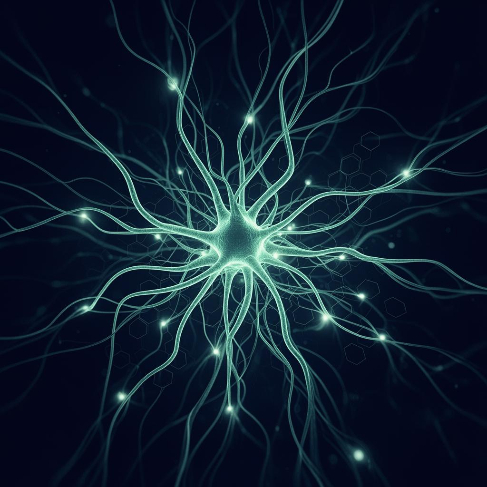
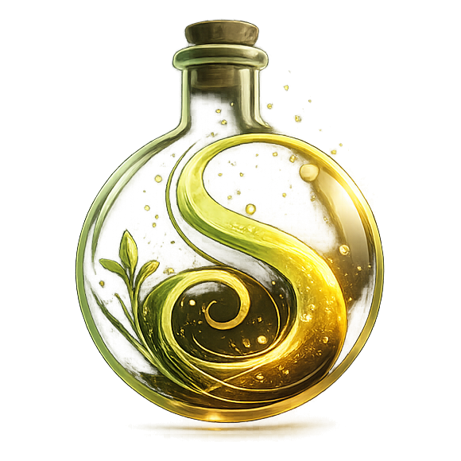
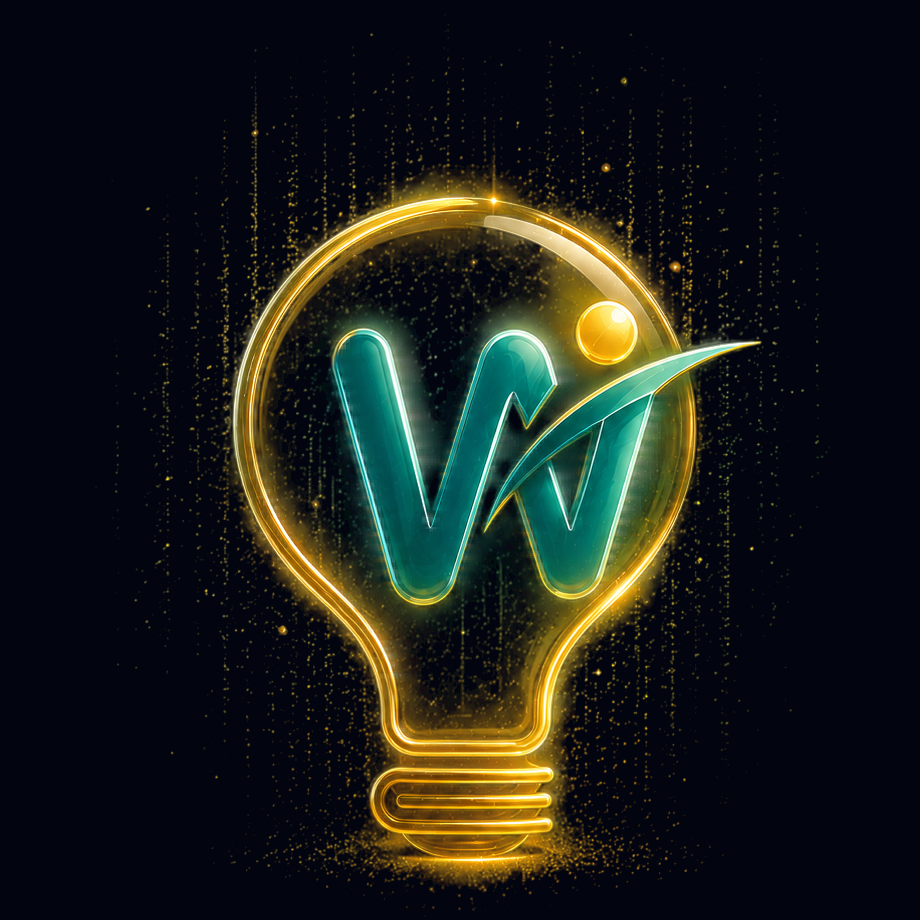

Intelligence for Complex Systems
Qlyqqx is the umbrella for systems that help you manage living, complex processes — not just static workflows.
Each is a self‑contained intelligence layer built on the Hermes Agent backbone (Nous Research), with its own product‑specific Whop community and one‑time purchase path.
This is not a generic productivity suite. This is precision intelligence for systems most tools were never built to handle.
Three intelligence layers. One backbone.
Each product below has its own landing page, with full product detail, examples, and checkout. Use the cards to jump straight to the one that matches your world.

Symbia by Qlyqqx
Symbia by Qlyqqx helps you monitor and stabilize the living biological systems you already manage: kombucha vats, homebrew, sourdough starters, aquariums, and mushroom grows. Each Symbia niche is a separate, one‑time‑purchase product with its own Whop community.
Symbia Kombucha
Learns your SCOBY's rhythms, tracks fermentation conditions, and flags issues before a batch spoils. For brewers who want more consistency and fewer mystery crashes.
Go to Symbia KombuchaSymbia Homebrew
Tracks fermentation variables, warns of stuck or slow ferments, and helps you repeat your best recipes with confidence — without drowning in spreadsheets.
Go to Symbia HomebrewSymbia Reef
Monitors key water and tank parameters, learns what "stable" looks like for your reef, and alerts you before tiny shifts turn into major crashes.
Go to Symbia AquariumSymbia Sourdough
Tracks your starter conditions, build‑times, and environment so you can dial in consistent, predictable loaves — not fridge‑shelf‑or‑nothing outcomes.
Go to Symbia SourdoughSymbia Mushroom
Tracks substrate conditions, humidity, contamination risk, and fruiting cycles so you can grow more consistently and avoid lost batches.
Go to Symbia Mushrooms
Wisp by Qlyqqx
Wisp by Qlyqqx is the intelligence layer for students and teachers who want a learning environment that grows with them, not resets every term. Each Wisp role is a separate, one‑time‑purchase product with its own community.
Wisp Aris
Breaks down complex material, recommends personalized practice, and builds evolving study plans that actually stick — so you study smarter, not harder.
Go to Wisp ArisWisp Ocrat
Helps you monitor class comprehension, spot falling‑behind students early, and personalize support at scale — without drowning in grading and spreadsheets.
Go to Wisp Ocrates
Wrapp by Qlyqqx
Wrapp by Qlyqqx is the system for creators and teams who run UGC‑based ad pipelines at scale. One product, one landing page, one community. Built to help you land deals faster and ship content without the usual chaos.
The Qlyqqx Umbrella, in Brief
Qlyqqx is not a product — it's the brand umbrella for these complex living‑system agents.
Each product (and every sub‑niche under Symbia, as well as both Wisp roles) is a self‑contained, one‑time‑purchase system.
Community access is a separate monthly subscription for each product's Whop community.